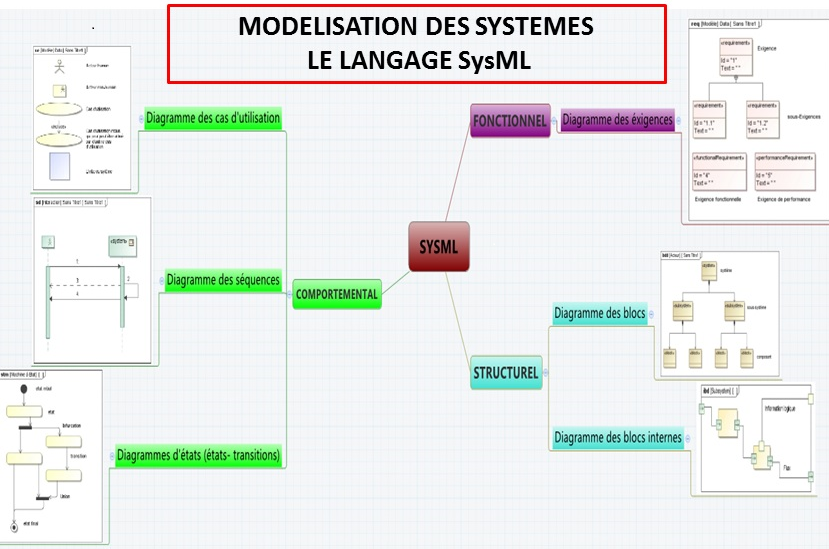
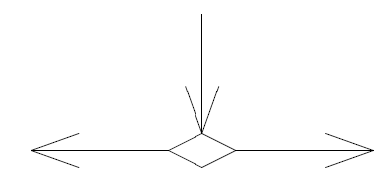
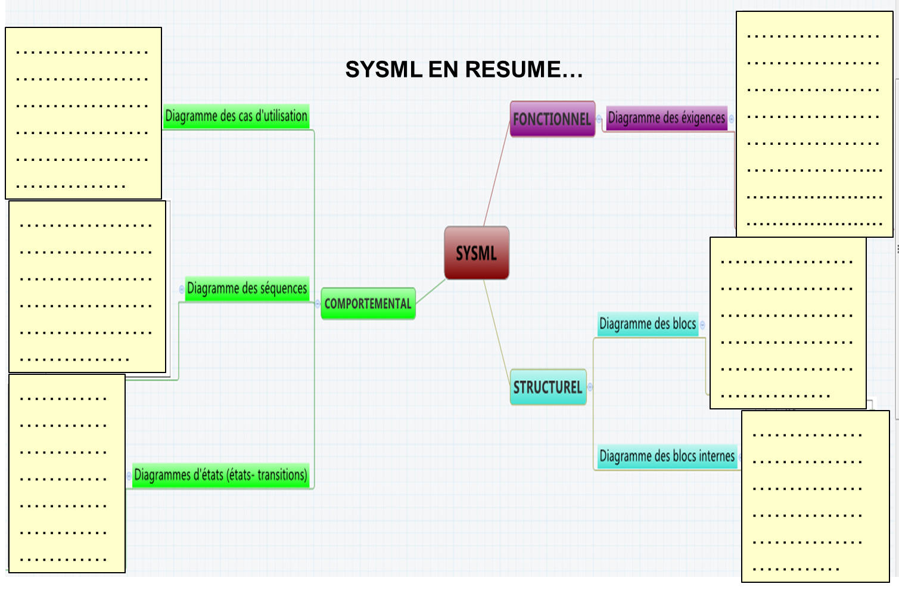

Découverte de SysMLescription fonctionnelle
A partir du Diaporama de présentation générale de sysml: cliquer ici 
Répondre aux questions suivantes
Chapitre « Modélisation des systèmes » :
Donner l’intérêt de modéliser un système :
A partir du diaporama « présentation sysml », au Chapitre « langage sysml »
Donner la définition d’un système
Indiquer les trois aspects à considérer dans la description d’un système
Diagramme d’exigences.
Donner le rôle du diagramme d’exigences
Indiquer quel type de liaison on utilise pour exprimer qu’une exigence répond à la demande.
Quelle type de liaison utilise-t-on pour indiquer qu'une exigence précise les valeurs numériques d'une autre exigence ?
Diagramme des cas d’utilisation
Donner le rôle du diagramme des cas d’utilisation
Comment représente-t-on un acteur humain?
Comment représente-t-on un acteur non humain?
Comment représente-t-on un cas d’utilisation?
Diagramme de séquences
Donner le rôle du diagramme de séquences
Comment appelle-t-on les lignes verticales représentant les différents éléments
Diagramme état transition.
Comment appelle-t-on les éléments de communication qui relient les lignes de vie ?
Diagramme de blocs
Donner le rôle du diagramme de blocs.
Comment peut-on indiquer le nombre d’opérateurs ?
Indiquer la notation utilisée quand le nombre d’opérateurs n’est pas connu.
Diagramme de bloc interne.
Donner la constitution du diagramme de bloc interne
Comment nomme-t-on les « points d’accès » aux blocs?
Diagramme d’état-transition
Donner le rôle du diagramme état-transition
Indiquer comment on indique l’élément qui indique le début de séquence
Indiquer comment on indique l’élément qui indique la fin de séquence.
Indiquer ce que représente le symbole suivant.

Résumé :
Compléter le dessin ci-après en donnant une courte définition de chaque diagramme
Donner la définition d’un système
Indiquer les trois aspects à considérer dans la description d’un système
Diagramme d’exigences.
Indiquer quel type de liaison on utilise pour exprimer qu’une exigence répond à la demande.
Quelle type de liaison utilise-t-on pour indiquer qu'une exigence précise les valeurs numériques d'une autre exigence ?
Diagramme des cas d’utilisation
Comment représente-t-on un acteur humain?
Comment représente-t-on un acteur non humain?
Comment représente-t-on un cas d’utilisation?
Diagramme de séquences
Comment appelle-t-on les lignes verticales représentant les différents éléments
Diagramme état transition.
Comment appelle-t-on les éléments de communication qui relient les lignes de vie ?
Diagramme de blocs
Comment peut-on indiquer le nombre d’opérateurs ?
Indiquer la notation utilisée quand le nombre d’opérateurs n’est pas connu.
Diagramme de bloc interne.
Comment nomme-t-on les « points d’accès » aux blocs?
Diagramme d’état.
Indiquer comment on indique l’élément qui indique le début de séquence
Indiquer comment on indique l’élément qui indique la fin de séquence.
Indiquer ce que représente le symbole suivant.

Résumé :
Compléter le dessin ci-après en donnant une courte définition de chaque diagramme

Created with the Personal Edition of HelpNDoc: Full featured Documentation generator